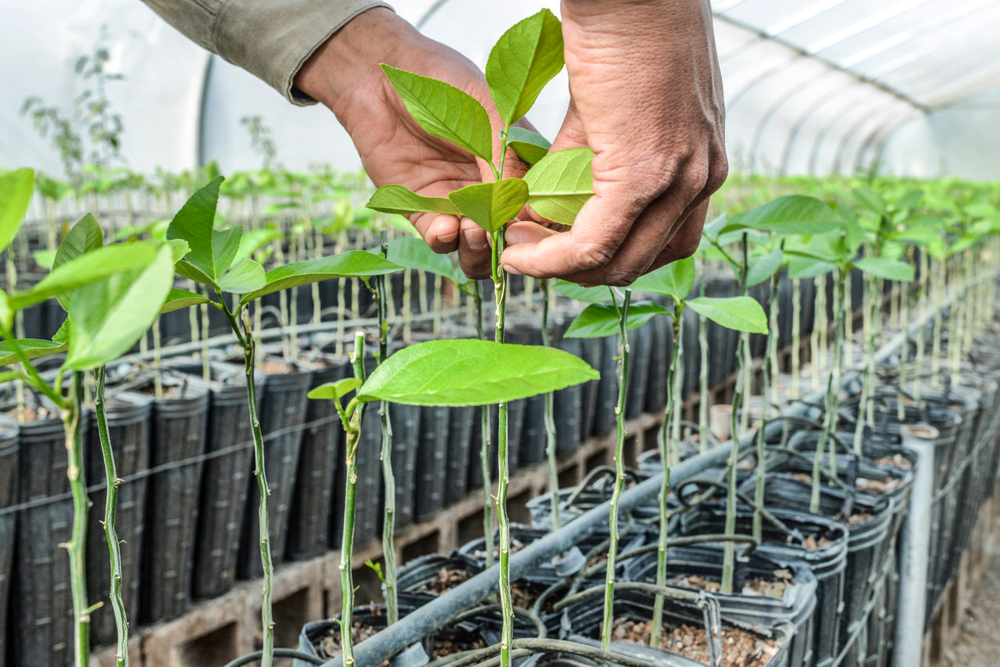
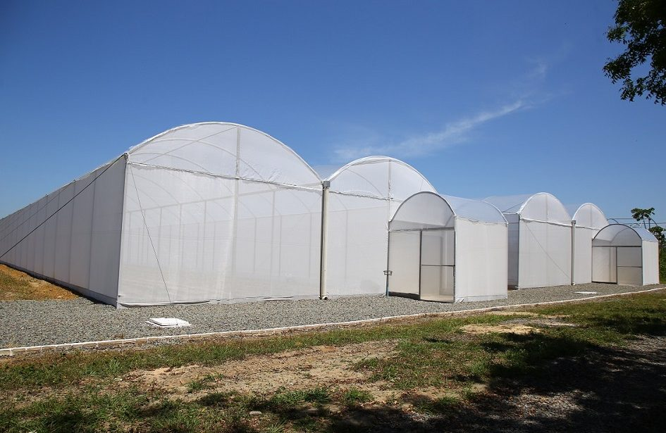
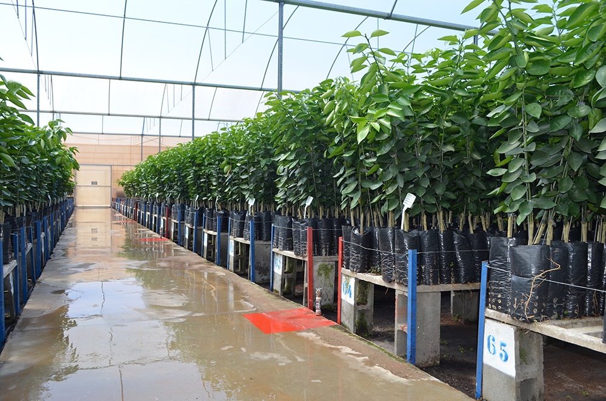
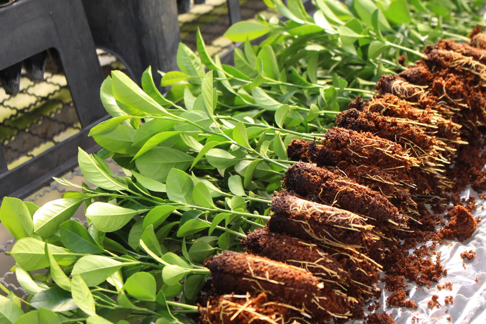
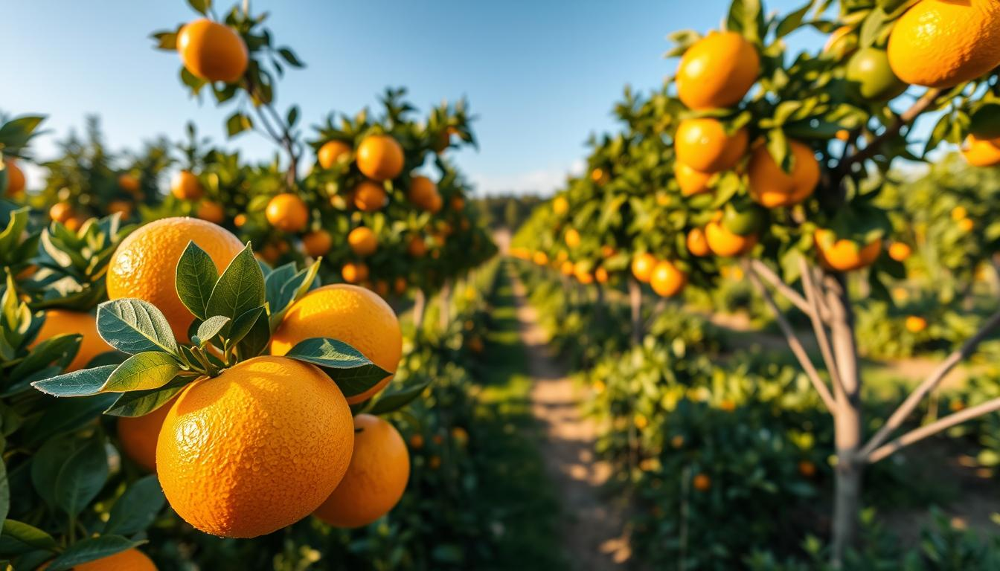
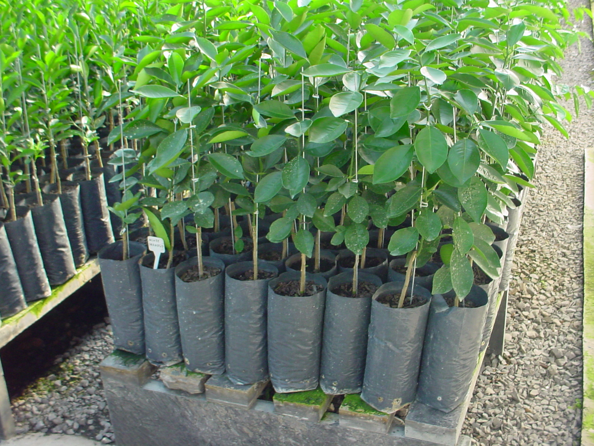
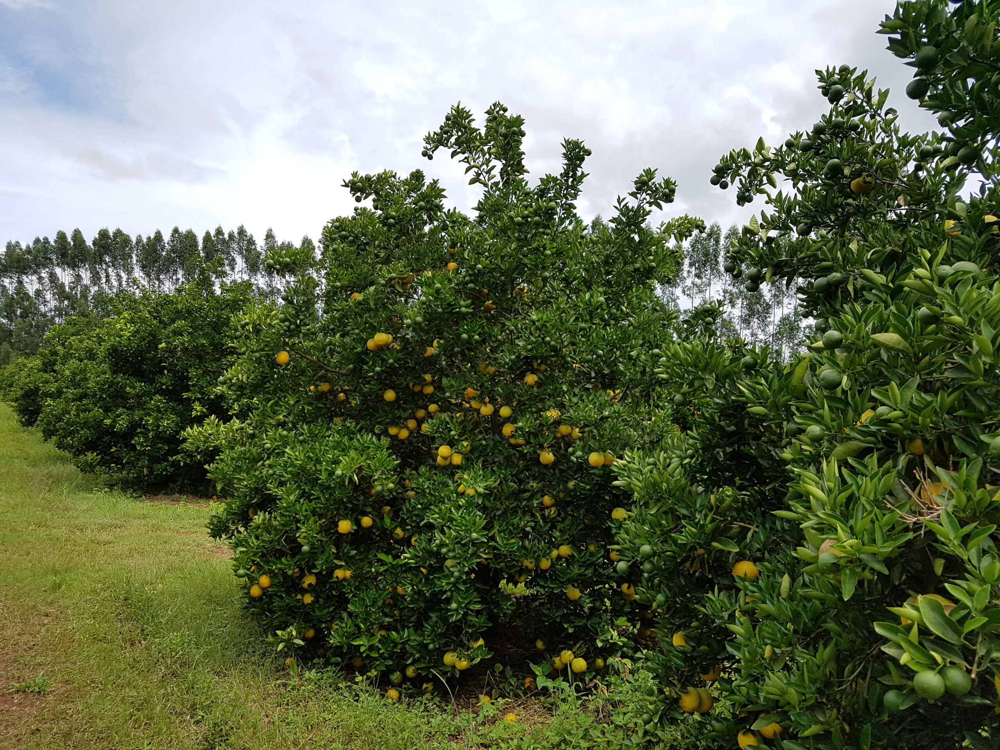

Mais de 10 anos cultivando mudas com qualidade e cuidado em Pouso Redondo, SC
O Viveiro Cítrico Yuri Bini nasceu da paixão pelo cultivo e do desejo de oferecer mudas de verdadeira qualidade para produtores e jardins da região do Alto Vale do Itajaí.
Com mais de 10 anos de experiência, o viveiro se consolidou como referência em mudas cítricas, ornamentais e frutíferas em Santa Catarina. Todas as mudas são produzidas com rigoroso controle fitossanitário, garantindo saúde e procedência ao cliente.
A produção em estufa, com porta-enxertos certificados e técnicas modernas de enxertia, resulta em mudas mais resistentes, uniformes e prontas para produzir mais rápido.






Endereço Yuri, Pouso Redondo — SC • Segunda a Sexta: 7h às 18h • Sábado: 8h às 12h